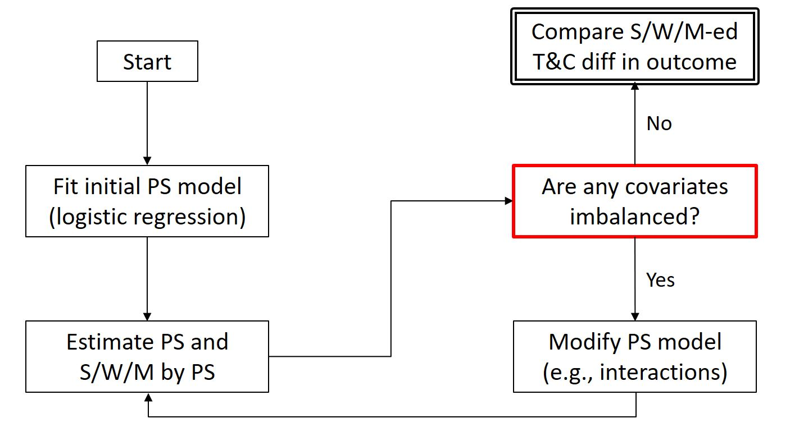

6 Matching
Both regression and matching/weighting are strategies to close the backdoor path between \(T\) and \(Y\). Both are conditional on observable covariates. However, matching/weighting provides a way to model treatment selection so that everyone looks the same on the pre-treatment covariates.
Matching/weighting refers to a set of procedures that modify the original sample in preparation for a statistical analysis. It’s a form of data pre-processing. The goal is to create a sample that looks like it was created from a randomized experiment.
What are the benefits of matching/weighting procedures?
- They are less restrictive about functional form than regression. We rely less on parametric assumptions. The intuition is the same as with an experiment: if we can create sufficient overlap and balance between treatment and control groups, then we should get a reasonable estimate of the treatment effect, even if the model used to estimate it is misspecified.
- Regression models on pre-processed data gives us two opportunities to close backdoor paths (i.e., “double robustness”).
- They provide an explicit way of dealing with treatment heterogeneity.
6.1 Exact Matching
The logic of exact matching is relatively straightforward, we want apples to apples comparisons. This is the same logic behind regression adjustements.
Instead of a simple independence assumption that we have for randomized experiments, we now have to rely on a conditional independence assumption (CIA).
\[ Y^0, Y^1 \perp T \mid S \]
Thus, in expectation:
\[ \begin{align} E\big[Y^1 \mid T=1, S \big] &= E\big[Y^1 \mid T=0, S \big] \\ E\big[Y^0 \mid T=1, S \big] &= E\big[Y^0 \mid T=0, S \big] \end{align} \tag{6.1}\]
The assumption in Equation 6.1 means that we can observe counterfactuals, conditional on pre-treatment variables \(S\). Unfortunately, we cannot test the conditional independence assumption directly.
Three overall assumptions:
- Ignorability or selection on observables.
- Overlap—any individual case has a non-zero probability of treatment.
- Stable Unit Treatment Value Assumption (SUTVA)—i.e., no spillovers.
SEE IF ABOVE SHOULD STILL BE HERE
Note. In cases when we have treatment effect heterogeneity, the ATT, ATU, and ATE estimates will be different, as exemplified in Table 6.1.
| SES | N | degree | earnings |
|---|---|---|---|
| 1 | 150 | 0 | 2,000 |
| 1 | 50 | 1 | 4,000 |
| 2 | 100 | 0 | 6,000 |
| 2 | 100 | 1 | 8,000 |
| 3 | 50 | 0 | 10,000 |
| 3 | 150 | 1 | 14,000 |
What is our estimand (Lundberg, Johnson, and Stewart 2021)?
The procedure is relatively straightforward:
- Take the differences between treated and untreated groups within each stratum of \(S\).
- Weight these differences by the right distribution the estimand we are interested in:
ATE: weight the differences by the total sample distribution of \(S\).
ATT: weight differences by the distribution of \(S\) for treated cases.
Thus, for Table 6.1:
\[ \begin{align} \text{ATT} &= \frac{2000(50) + 2000(100) + 4000(150)}{50 + 100 + 150} = 3,000 \\\\ \text{ATE} &= \frac{2000 (200) + 2000(200) + 4000(200)}{200 + 200 + 200} = 2,666.7 \end{align} \]
The ATT is usually our most common estimand because treatment cases tend to be less common than control cases. In some cases, like the one portrayed in Table 6.2, we might not be able to calculate the ATE.
| SES | N | degree | earnings |
|---|---|---|---|
| 1 | 150 | 0 | 2,000 |
| 1 | 0 | 1 | ? |
| 2 | 100 | 0 | 6,000 |
| 2 | 100 | 1 | 8,000 |
| 3 | 50 | 0 | 10,000 |
| 3 | 150 | 1 | 14,000 |
But the ATT is just as easy to calculate as before, for Table 6.2:
\[ \text{ATT} = \frac{(?)(0) + 2000(100) + 4000(150)}{0 + 100 + 150} = 3,200 \]
Common Support
Strata that have only treatment or control cases (not both) are called off support. Strata with both treatment and control cases are in the region of common support.
Move to matching
subclassification (stratifying, binning, interval matching) vs exact matching
From sparseness to propensity scores. All exact matching is propensity score matching, but not all propensity score matching is exact matching.
Estimate them using logistic regression or any other classifier.
Workflow
We don’t have to do this with exact matching

compress one dimensional projection, expand and check for balance
the better your logistic regression is at predicting the outcome, the “worse” it is at providing common support; this makes sense because ultimately we want the ignorability assumption to hold